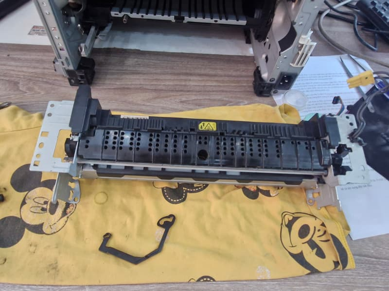
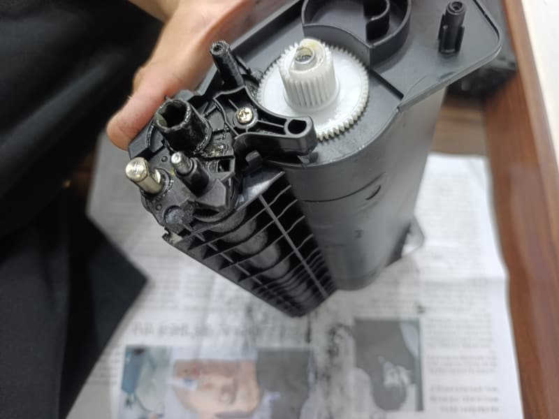

Sửa máy in tận nơi — mang vật tư theo xe, phần lớn xong trong một lượt
Gọi thợ mà thợ tới rồi hẹn mai quay lại vì thiếu linh kiện là mất hai lần thời gian. Kỹ thuật của chúng tôi mang theo trống, trục từ, gạt mực, chip và bánh kéo giấy cho các dòng máy phổ thông.
Các lỗi xử lý ngay tại chỗ
| Triệu chứng | Nguyên nhân thường gặp | Xử lý ở đâu |
|---|---|---|
| Máy in ra giấy trắng hoàn toàn | Hết mực, trục từ chai, hoặc hộp mực lắp chưa khớp | Tại chỗ |
| In mờ, nhạt dần cả trang | Hết mực hoặc mực đóng bánh do để lâu không in | Tại chỗ |
| Sọc đen dọc lặp lại theo chu kỳ | Trống xước — phải thay trống | Tại chỗ, có trống sẵn |
| Lem mực mép giấy, chạm vào bẩn tay | Gạt mực hở hoặc khoang mực thải đầy | Tại chỗ |
| Kẹt giấy liên tục | Bánh kéo giấy chai, giấy ẩm, hoặc có dị vật trong đường giấy | Tại chỗ |
| Không ăn giấy, kêu rè | Bánh kéo giấy mòn cao su | Tại chỗ, có bánh sẵn |
| Bản in nhoè như ẩm, chữ bôi ra | Lô sấy yếu hoặc bao lụa hỏng | Tuỳ mức — có thể phải về xưởng |
| Vừa nạp mực vẫn báo hết mực | Chip hộp mực đã đếm hết | Tại chỗ, có chip sẵn |
| Máy không nhận lệnh in từ máy tính | Driver, cổng USB, hoặc hàng đợi in bị treo | Tại chỗ |
| Epson L-series sọc ngang, thiếu màu | Nghẹt đầu phun do để lâu không in | Tại chỗ, nặng thì về xưởng |
| Máy báo mã lỗi SC (Ricoh) hoặc đèn nháy liên tục | Lỗi hệ thống — cần đọc mã cụ thể | Chẩn đoán tại chỗ |
| Máy bật không lên, có mùi khét | Bo nguồn — thường do sụt điện khi đang nung lô sấy | Mang về xưởng |
Cách chúng tôi báo giá sửa chữa
Không có "phí kiểm tra" riêng. Kỹ thuật tới, xem máy, nói rõ lỗi gì và cần thay gì, kèm giá. Anh/chị đồng ý thì làm; không đồng ý thì không mất phí đi lại.
Lý do làm vậy: nghề này nhiều người bị báo giá kiểu "để tôi mang về xem rồi báo sau", và khi máy đã nằm ở xưởng người ta thì khách mất thế. Chúng tôi làm tại chỗ và chốt giá trước để anh/chị luôn còn quyền từ chối.
Một điều nữa chúng tôi nói thật: có những máy không nên sửa. Máy in A4 đời cũ mà phải thay cả lô sấy và bo nguồn thì tiền sửa gần bằng máy mới, và máy mới có bảo hành. Trường hợp đó kỹ thuật sẽ khuyên anh/chị đừng sửa.

Máy đã bị người khác tháo sửa trước đó
Chúng tôi vẫn nhận, nhưng kiểm tra kỹ hơn và nói rõ phạm vi bảo hành trước khi làm. Lý do đơn giản: nếu máy đã bị tháo sai, có ốc thiếu hoặc linh kiện bị đổi, thì chúng tôi không thể bảo hành cho phần lỗi đã có sẵn.
Anh/chị cứ nói thẳng là máy đã được sửa trước đó — điều này giúp kỹ thuật chẩn đoán nhanh hơn, không phải mò lại từ đầu.

Chỉ cần nạp mực thôi?
Nếu bản in chỉ nhạt dần đều cả trang thì đó là hết mực — xem quy trình nạp mực 7 bước.
Máy in hỏng giữa giờ làm?
Gọi và mô tả triệu chứng. Kỹ thuật mang vật tư theo để xử lý trong cùng một lượt đi.